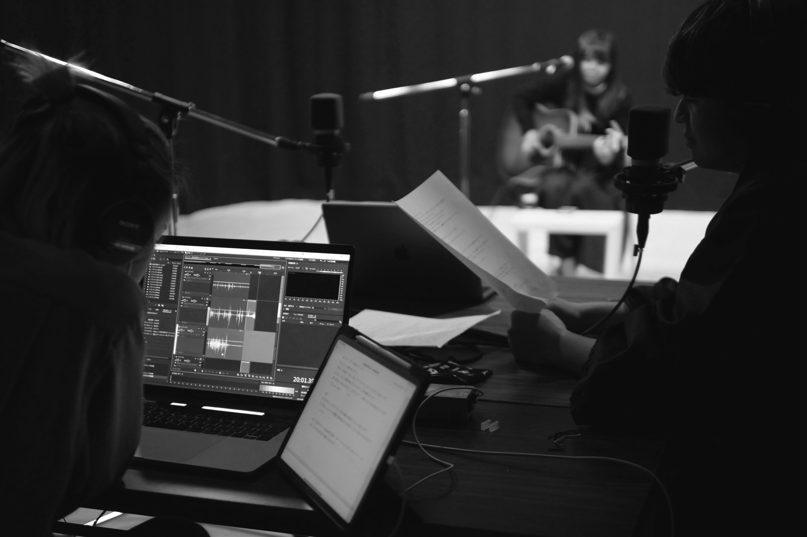

Radio Seian Denpa
Radio recording ,2019 -
Natsuha Nakamura

公式サイトはこちら→ Radio Seian Denpa official site
ラジオ-セイアンデンパ
日本最大の湖の畔にある成安造形大学デンパスタジオから毎月末に配信中！MCオカダモエが個性溢れる芸大生ゲストとビートを刻む。
人気コーナー「成安100年の歴史」「サトウユキノのセイアン図書館の新書紹介」「ボイスラボ」「んぱちゃんの芸術家印象言葉」「スナック ありさ」「トガノキドアイラク」など
その他、デンパ-スピンオフ番組として「アフターデンパ」「深夜デンパ」「デンパプラス」「デンパRX」「OCデンパ」「デンパBB」「デンパ-マテリアルラヂオ」など多数配信⚡
